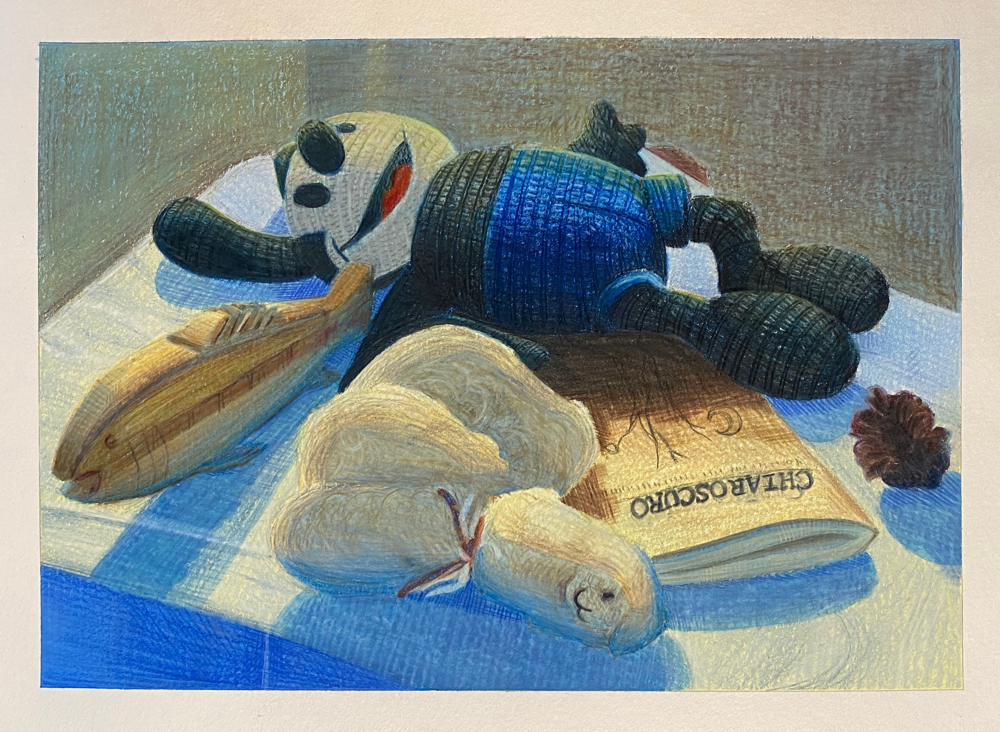

Project Overview
Objective
Create a detailed colored pencil still life that demonstrates observational drawing,material rendering, texture, lighting, and composition. The project focused on translating real-world objects into a polished illustration through careful color layering, value control, and attention to surface detail.
My Role
Illustrator responsible for observation, composition, color development, rendering, and final presentation.
Tools
Colored pencils, drawing paper, observational setup, reference lighting, and traditional rendering techniques.
Deliverables
Finished still life illustration, portfolio-ready image, and project documentation describing process and outcomes.

Process
Approach
- Observation & Composition: Arranged and studied the still life objects to create a balanced composition with clear foreground, midground, and background relationships.
- Structure & Proportion: Established the major shapes, object placement, and perspective relationships before developing surface details.
- Value & Lighting: Built light, shadow, and reflected color to create depth and separate materials within the scene.
- Color Layering: Used layered pencil application to develop rich color, texture, and transitions across different object surfaces.
- Final Refinement: Adjusted edges, contrast, texture, and details to strengthen realism and visual hierarchy.
Results
Outcomes
- Produced a polished traditional illustration suitable for inclusion in a professional visual design portfolio.
- Demonstrated strong foundational drawing skills, including proportion, lighting, texture, and color layering.
- Showcased the ability to create visually engaging work with clarity, craftsmanship, and strong presentation quality.